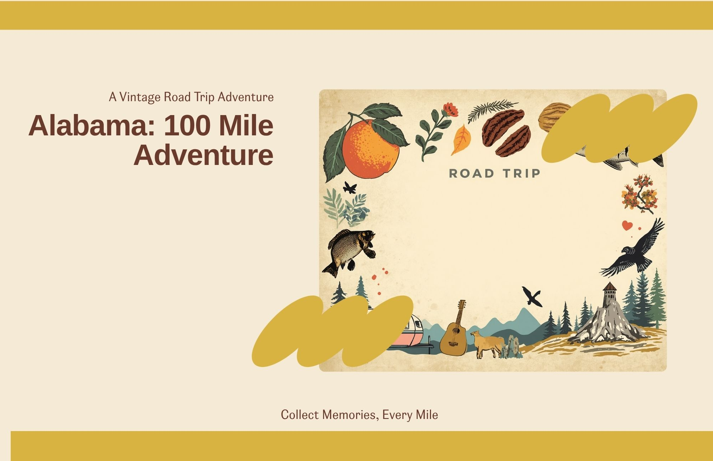

The Route
Follow the road from Oxford through Talladega National Forest and onward to Alabama's highest point.
Collect stories. Treasure places.

A collectible travel zine
Forest roads, mountain views and roadside stories through the heart of Alabama.
Open This IssueWelcome to the first Issue of 100 Adventure. This journey invites you to slow down and experience Alabama through forest roads, historic places, handmade traditions and unexpected roadside moments.
We hope you leave with more than photographs. Gather the details that make a place memorable: a postcard, a local story, the sound of cicadas at dusk or a road you might otherwise have passed.
Begin reading the IssueThe Spirit of This Issue
Know the places you travel through, not only the roads between them. Notice how forests, mountains, rivers and seasons shape the stories of the people who call a place home.
What helps you feel grounded?
Turn the Page
A thoughtfully curated road journey that becomes your own personal keepsake.
Follow the road from Oxford through Talladega National Forest and onward to Alabama's highest point.
Discover scenic roads, historic landmarks, forest campgrounds and quiet places worth slowing down for.
Gather local stories, postcards, photographs, sounds, flavors and small pieces of the journey.
Add photographs and memories as you travel, then create a mini zine that belongs entirely to you.
A Gentle Invitation
“Take one part of the journey slowly enough that you remember how it felt.”
Pull over somewhere peaceful. Listen before taking a picture. Let the place introduce itself.
Your Traveling Archive
Every traveler becomes a co-author.
Collectible Journeys
Each Issue preserves a different road, region and expression of the American spirit.
Connection to the Land
The Pursuit of Happiness
What Deserves to Be Remembered?
Carry It Forward
Take a memory. Support a local maker. Share a story. Leave the places you visit a little better than you found them.
Explore Issue No. 001